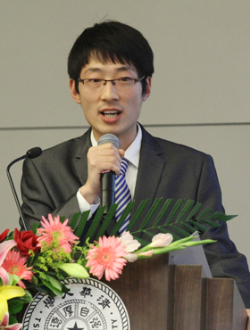

我来自安徽省巢湖市，高中毕业于巢湖市第一中学，2009年考入清华大学，现就读于清华大学水利水电工程系水工92班，汉族，男，中共党员。
进入清华大学进行学习，对我来说是一件非常幸运的事情。2009年，我是清华在安徽招生的最后一名，因此，我非常珍惜着来之不易的机会，在进入清华园伊始就下定决心要付出最大的努力为成为一名合格的清华人而奋斗。下面，我将对三年来的成长与收获进行总结。
（一）思想积极要求进步，被评为北京市三好学生
我在刚入学时就积极要求向党组织靠拢，2009年10月递交了入党申请书，之后成为一名入党积极分子。从递交申请书的那一刻起，我始终以一名党员的标准要求自己，认真学习党的理论知识；积极参加党组织生活以及班级党课学习小组组织的党建活动；并且十分注意同积极分子、党员同学交流，提高自己的思想认识。组织通过一年多时间的观察考验，在2011年5月发展我为预备党员（水九年级第一批发展的四名党员之一），并于2012年5月转为正式党员。
此外，我乐于奉献，积极投身志愿活动。国庆六十周年群众游行，我第一时间报名参加方阵；三年来，我参加百年校庆、水利系六十周年系庆，昆明市滇池环保等多项志愿活动。
我在同学中有较高的威信，大一素测排名班级第二，大二、大三均排名班级第一。入选清华大学“饮水思源，服务社会”优秀学生培养计划九期，并在2011-2012学年度被评为北京市三好学生。
（二）专业学习勤奋刻苦，三年综合成绩名列专业第一
清华大学的学习任务是紧张而辛苦的，课程信息量大，任务重，但是我深知只有认真学好这些课，我们才能在今后为国家的发展做出自己的贡献，不辜负父母、国家的期冀，称得上一名合格的清华人。
因此，我始终把专业学习摆在最重要的位置，勤奋踏实，刻苦钻研，取得了优异的成绩。三年学分绩名列专业第二，综合成绩名列专业第一，在《工程力学1》、《工程力学2》、《天文学导论》三门课程中得到满分，获得国家奖学金，一二·九奖学金等荣誉。在系内推研中，以综合成绩第一名被录为直读博士生，导师为强茂山教授。
除了本专业的学习外，我还参加了计算机应用辅修专业的学习，目前已获得18学分，即将毕业。此外，在水利系第三届、第四届水利创新大赛中，我所在的小组以作品《新型节水龙头》、《硐室变形监测系统》，分别获得理念创新类三等奖以及最佳实验奖；并在清华大学结构设计大赛中获得专业组三等奖。
（三）社会工作踏实投入，任水利系团委组织副书记
在勤奋学习的同时，我积极参加各项社会工作，为同学服务。大一学年，我担任校团委科创中心星火组干事，为“星火计划”的选拔、运行提供服务。大二学年，我担任水工92班团支书，期间组织“模拟联合国”素拓活动，开拓了班级同学的国际视野，受到一致好评；组织“践行主席希望，投身复兴伟业”集中主题团日，回顾了同学们在百年校庆中参加的各种活动，展望了新百年的复兴伟业，得到了老师同学的高度赞扬。大三学年，我担任水利系团委组织组组长，负责全系团支部的组织联系以及思想教育工作，同时还在校团委社团部常务组担任副组长，参与第九届社团文化节的组织工作。大四学年，我在院系团委担任组织副书记，同时在班级担任副班长，希望能继续为班级，院系的同学服务。
在三年多的社会工作经历中，我始终以服务同学作为工作的中心，认真思考同学们的切实需求，从长远出发开展工作，充分锻炼了自己的沟通表达能力，组织协调能力，分析应变能力，既收获了快乐，又收获了成长。
（四）创新创业倾情实践，公司运营平稳顺利
我积极参加校内外的创业赛事和创业活动，于2010年11月参与组建北京华一至尚文化传媒有限责任公司。公司源于清华大学，是一家提供青少年素质能力发展养和生涯规划教育全面解决方案的高端品牌教育机构，于2010年12月正式注册，2012年前三季度营业额超过60万元。公司现有员工8人，我在公司注册前就加入团队，是首批创始人之一，也是团队中唯一的在校本科生，现为CEO助理，同时负责市场及人力资源工作；
公司以帮助青年学生进行职业规划为核心理念，开发了面向中学生的夏（冬）令营、面向大学生的国外交流项目以及职业测评、高端咨询等业务。2011年3月，公司与CCTV中学生频道合作，举办了“大型高考专业选择咨询会”，我在其中负责各高校各专业咨询师的招募工作；2012年寒假，以及2012年暑假公司举行了两期“清华启航”夏（冬）令营，我在其中参与前期的组织以及相关课程的讲授工作；2012年暑假，公司成功组织两批大学生，分别赴美国以及日本进行参访交流，我在其中负责市场推广工作；2012年5月公司项目“华壹人才测评网络系统”入选国家级大学生创新创业训练计划，为全校仅有的5个获得8万元支持金额的创业实践类类项目；2012年7月，公司项目《河南省职业中学职业测评系统》，获河南省教育部优秀一等奖；2012年8月，我随公司其他两位成员一起赴沈阳参加“华图教育大学生创业基金”答辩，公司理念、业务以及商业模式受到了投资方的高度肯定，获得10万元创业基金。
参与一个创业公司的运营对我来说是一份非常难得的经历，锻炼了我的沟通能力、表达能力以及协调各项事务的技能。在参与各种各样商业项目的运作的过程中，我体会过成功的喜悦，也感受过失败的沮丧，但无论是成功失败，这些经历都是真真切切的一个要做事要生存公司的实际工作。很多项目虽然规模不大，但对于一个创业公司来说，就是生死存亡的，因此在工作时更要认真负责，步步为营，这其中的收获和感悟是在校园中无法得到的。
此外，我还于2011年4月到2012年5月参与建立Civil Leader大学村创业项目，团队成员共6人。项目致力于为北京，乃至全国大学生提供廉价、优质的文化衫以及正装服务。成立一年多以来，Civil leader大学村为全国近十所城市的几十所大学提供了近2万件文化衫，销售额近50万元人民币。目前，项目与京津各高校的社团、院系学生会建立了友好的合作关系，并且正在进军原创文化衫领域，力求打造属于自己的品牌。
（五）自强不息追求卓越，做一名又红又专的合格清华人
半国英才聚清华，能在园子里和如此多优秀的同学一起学习，一起生活，这宝贵的机会值得我们每一个人好好珍惜。在清华学习生活的三年，是我收获最多，成长最多的三年。在这里我打下了扎实的专业基础；收获了亲如兄弟的同学情谊；学会了团结协作，为一个目标而奋斗；也体验了创业过程中的辛酸苦辣。在这里，我各方面的能力都得到了全面的提高，但我知道，作为一个清华人，我们还要以更高的标准来要求自己，因为我们肩上承担的是民族的责任，国家的未来。奋斗的道路是没有终点的，只有不断追求卓越，牢记“自强不息，厚德载物”的校训，以那些“又红又专”的杰出校友为榜样，我们才能不断进步，成为一名合格的清华人，为国家，为社会贡献一份力量。
最后我要感谢领导和老师、感谢辅导员、感谢公司的同事以及关心我帮助我的同学们，感谢清华为我们提供的宝贵资源，我会更加努力，不断奋斗，将来回报母校，回报祖国。
向以上所有同学看齐！如果你还是有耐心看到这的话，你已经具备了见贤思齐的品质。